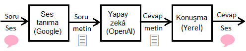

API anahtarı gerekli: Buradan alın
Yazılımın iki bileşeni:
İnsanlığın iki hayali gerçek oldu:
• Arkadaş gibi sohbet eden bir robot
• Sözleri başka dile çeviren bir araç
Üç teknolojiyi birleştiriyor:
Ses tanımayı desteklemeyen tarayıcılarda sesli komut yerine yazılı komut (düz metin) ile çalışır